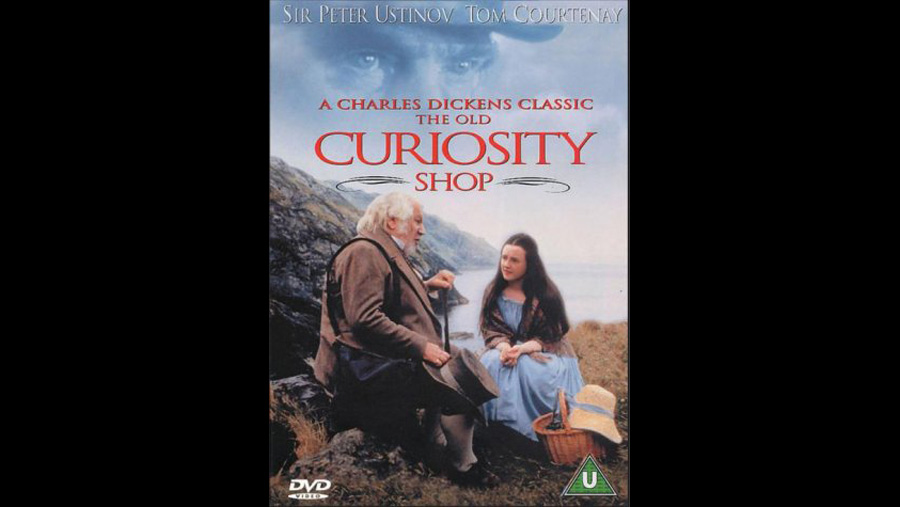

| Character | Actor |
|---|---|
| Little Nell | Sally Walsh |
| Grandfather Trent | Peter Ustinov |
| Kit Nubbles | William Mannering |
| Quilp | Tom Courtenay |
| Dick Swiveller | Adam Blackwood |
| Fred Trent | Timothy Watson |
| Tom 'Dog' Scott | Ricci Harnett |
| Skinflete | Michael Mears |
| Sampson Brass | Christopher Ettridge |
| Sally Brass | Anne White |
| Mrs. Quilp | Cornelia Hayes O'Herlihy |
| Mrs. Jiniwin | Jean Marlow |
| Mrs. Nubbles | Alwyne Taylor |
| Tom Codlin | Martin Wimbush |
| Short Trotters | Alan Shearman |
| Mrs. Jarley | Julia McKenzie |
| The Single Gentleman | James Fox |
| Crossing Sweeper | Birdy Sweeney |
| Mr. Marton, schoolmaster | Brian McGrath |
| George | Bronco McLoughlin |
| Mr. Witherden | Frank Thornton |
| Isaac List | Hamish McColl |
| Jowl | Stewart Permutt |
| Groves, Landlord of the Valiant Soldier | Alan Barry |
| Mrs. George | Doreen Keogh |
| Debtor Gentleman | Brian de Salvo |
| Flower Seller | Gloria Hunniford |
| Stout Gentleman | Oliver Maguire |
| Tame Constable | Wesley Murphy |
| Mrs. Simmons | Daphne Neville |
| Bessy | Helen Norton |
| Warncliffe | John Rogan |
| Role | Person |
|---|---|
| Director | Kevin Connor |
| Screenplay | John Goldsmith |
A Disney made-for-television film adaptation directed by Kevin Connor (written by John Goldsmith) who also created the 1989 version of Great Expectations with Anthony Hopkins and Jean Simmons (also for Disney).